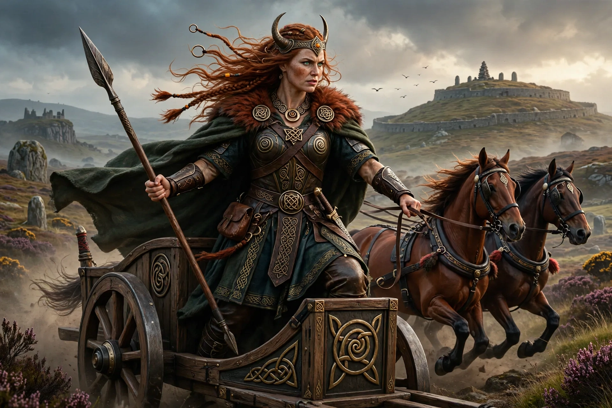

Medb (pronounced [mʲɛðv]; later Méabh, Maeve) is queen of Connacht in the Ulster Cycle of Irish mythology. She and her husband Ailill mac Máta lead the Cattle Raid of Cooley (Táin Bó Cúailnge) against Ulster.

| Medb | |
|---|---|
| Title | Queen of Connacht |
| Spouse | Ailill mac Máta |
| Abode | Cruachan (Rathcroghan) |
The Táin begins after Medb and Ailill compare possessions and find Ailill's white-horned bull Finnbennach unmatched; Medb seeks the Brown Bull of Cooley, provoking war with Ulster, whose hero Cú Chulainn resists her armies single-handedly due to the curse of Macha.
Scholars view Medb as possibly a sovereignty goddess, whose name relates to "mead" and intoxication, and whose marriages confer kingship.